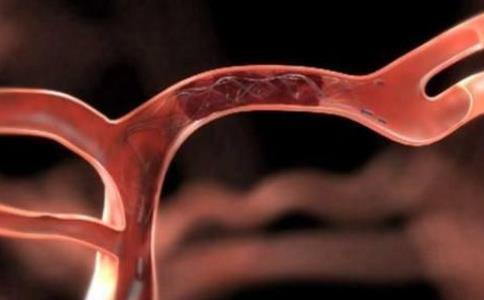

很多人以为，只有到老了的时分，才需要为我们的血管
保护心血管、降血压，茄子含丰富的维生素P，是一种黄酮类化合物，有软化血管的作用，还可增强血管的弹性，降低毛细血管通透性，防止毛细血管破裂，对防止小血管出血有一定作用。能防治高血脂、高血压、动脉硬化。
不仅各种维生素含量比
抑制胆固醇的产生，防止动脉硬化和血管变脆，防治心血管疾病。
味甘，性平，有排毒解毒、清胃涤肠、和血止血等功效。古书记载，
木耳中所含的一种植物胶质，有较强的吸附力，可将残留在人体消化系统的灰尘杂质集中吸附，再排出体外，从而起到排毒清胃的作用。还有助于降血压，防止血管硬化。
补中益气、养血安神。
具有营养脑神经细胞的作用，防止动脉硬化。
蜂蜜有助于改善血液循环，防止血管硬化。蜂蜜富含维生素B2、C，以及果糖、葡萄糖、
蜂胶由蜂脂制成，具有很强的抗菌作用，被称为“天然维生素”。与此同时，蜂胶还是一种天然的高效免疫增强剂，可以刺激机体的免疫机能，增强巨噬细胞的活力。
蜂胶中的黄烷酮、黄酮、异黄酮、维生素P等营养元素，以及丰富的矿物质，有助于提升人体免疫力，有效防止血管被氧化，保证血管的年轻态，让血液黏稠度保持在刚刚好的状态。
玉米含有蛋白质、钙、镁、赖氨酸等成分，不饱和脂肪酸含量达85%以上，主要为亚油酸和油酸，有助于人体脂肪及胆固醇的正常代谢，可以减少胆固醇在血管中的沉积，从而软化动脉血管，预防心血管疾病的发生。延缓细胞老化，降低血清胆固醇，减缓动脉硬化和脑功能衰退。
降低胆固醇，防止血管硬化。
降低血胆固醇浓度。
味甘，性凉，有清热、解毒、祛火之功效，是我国中医常用来解多种食物或药物中毒的一味中药。绿豆富含维生素B族、葡萄糖、蛋白质、淀粉酶、氧化酶、铁、钙、磷等多种成分，常饮绿豆汤能帮助排泄体内毒素，促进机体的正常代谢。
许多人在进食油腻、煎炸、热性的食物之后，很容易出现皮肤痒、暗疮、痱子等症状，这是由于湿毒溢于肌肤所致。绿豆则具有强力解毒功效，可以解除多种毒素。现代医学研究证明，绿豆可以降低胆固醇，又有保肝和抗过敏作用。夏秋季节，绿豆汤是排毒养颜的佳品。
味甘，性平。中医认为，苦瓜有解毒排毒、养颜美容的功效。《本草纲目》中说苦瓜“除邪热，解劳乏，清心明日”。苦瓜富含蛋白质、糖类、粗纤维、维生素C、维生素B1、维生素B2、尼克酸、胡
现代医学研究发现，苦瓜中存在一种具有明显抗癌作用的活性蛋白质，这种蛋白质能够激发体内免疫系统的防御功能，增加免疫细胞的活性，清除体内的有害物质。
味甘，性凉，有养血排毒、健脾和胃的功效，素有“小
现代医学已经证明，胡萝卜是有效的解毒食物，它不仅含有丰富的胡萝卜素，而且含有大量的维生素A和果胶，与体内的汞离子结合之后，能有效降低血液中汞离子的浓度，加速体内汞离子的排出。
《本草求真》记：“菠菜，何书皆言能利肠胃。盖因滑则通窍，菠菜质滑而利，凡人久病大便不通，及痔漏关塞之人，咸宜用之。
又言能解热毒、酒毒，盖因寒则疗热，菠菜气味既冷，凡因痈肿毒发，并因酒湿成毒者，须宜用此以服。且毒与热，未有不先由胃而始及肠，故药多从甘入，菠菜既滑且冷，而味又甘，故能入冒清解，而使其热与毒尽从肠胃而出矣。